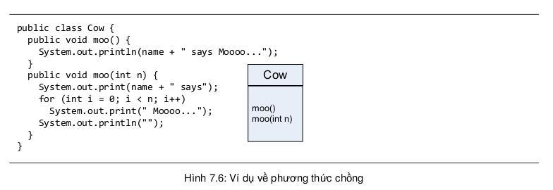

Các ví dụ về cài đè sai trong mục trước đã nói đến khái niệm cài chồng phương thức (method overload).
Cài chồng phương thức chỉ đơn giản là có một vài phương thức trùng tên nhưng khác danh sách đối số. Phương thức chồng không liên quan đến đa hình hay thừa kế. Một phương thức cài chồng không phải phương thức cài đè.
Cài chồng phương thức cho phép ta tạo nhiều phiên bản của một phương thức, mỗi phiên bản chấp nhận một danh sách đối số khác nhau, nhằm tạo thuận lợi cho việc gọi phương thức.
Ta sẽ còn quay lại các trường hợp áp dụng cài chồng khi nói về các hàm khởi tạo (constructor) trong Ch-¬ng 9.
Do cơ chế cài chồng phương thức không phải tuân thủ hợp đồng đa hình do lớp cha quy định, các phương thức chồng có tính linh hoạt cao hơn.